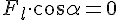
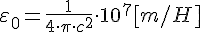

Экзамен в 13:10
Силовые линии электрического поля направлены перпендикулярно поверхности заряженного проводника
Напряжённость электромагнитного поля внутри проводника равна нулю. Все точки проводника имеют один и тот же потенциал. Работа по перемещению заряда вдоль поверхности проводника (снаружи) равна нулю. Это возможно только если вектор напряжённости направлен перпендикулярно поверхности проводника.
Магнитная восприимчивость
у диамагнетиков - небольшое отрицательное значение
у парамагнетиков - небольшое положительное значение
у ферромагнетиков - положительна и имеет очень большие значения
эквипотенциальные поверхности поля для точечных зарядов - сфера
Работа по перемещению частицы с зарядом из точки с потенциалом в точку с потенциалом
З-н Ома
Магнитный поток:
Объемная плотность энергии магнитного поля:
Напряжённость
Напряжённость конечного стержня
Бесконечного стержня
Сила Лоренца:
Не меняет кинетическую энергию!

Правило левой руки
Вектор магнитной индукции входит в ладонь, вектор скорости идёт вдоль пальцев, сила Лоренца - вдоль большого пальца
Для бесконечно длинных соленоидов
если с сердечником то
где  - концентрация витков
- концентрация витков
Индукция магнитного поля через напряжённость магнитного поля
Скорость изменения магнитного потока через медный виток
ЭДС, возникающая под действием ЭМ индукции
Сопротивление проволоки витка
Если расстояние между пластинами конденсатора - , то напряжение
Магнитный поток
- магнитный поток через 1 виток
- полный магнитный поток
- индуктивность
- ЭДС самоиндукции
Индуктивность соленоида
Давление пластин на диэлектрик между ними
Электрическая постоянная

Плотность энергии электрического поля
Электрическая индукция